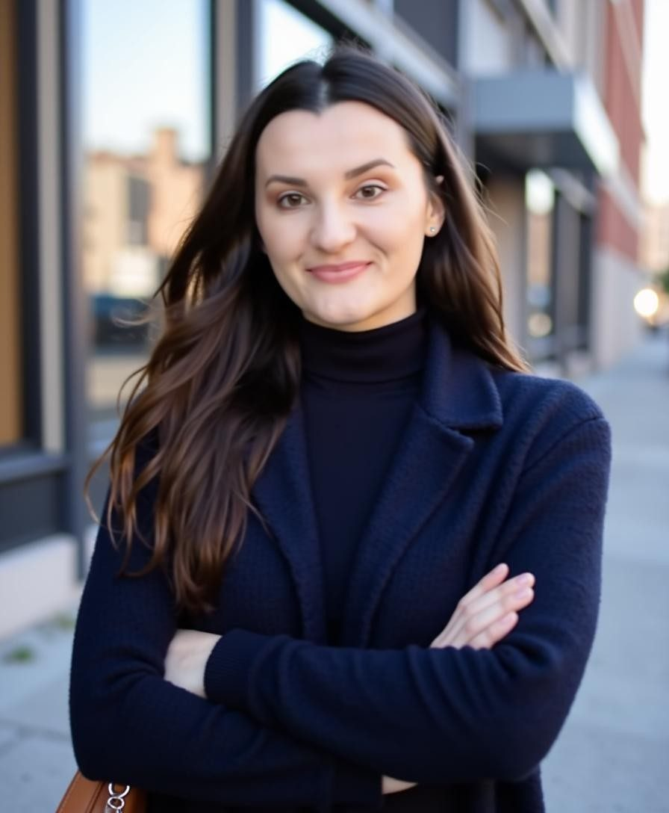

Beratung und Mentoring. Weniger Chaos, mehr Sendungen.
Für Produktionsfirmen, die einen Prozess brauchen, und für Produzentinnen und Produzenten, die den vorhandenen noch lernen.

CAM 4Das meiste Produktionschaos ist kein Personalproblem. Es ist ein fehlender Prozess. Sandra Pudja schaut sich an, wie ein Produktionsteam wirklich arbeitet — wo die Information liegt, wer was entscheidet, wann das Call Sheet rausgeht und warum es immer zu spät kommt — und baut daraus etwas, das das Team ohne sie betreiben kann.
Für einzelne Produzentinnen und Produzenten bietet sie Eins-zu-eins-Mentoring: Rundown bauen, Budgetieren, Crew-Führung, die Nerven am Live-Tag und die Gespräche mit Kunden und Sendern, die einem niemand beibringt.
Das Format ist praktisch. Keine Folien über Leadership. Eine echte, anstehende Produktion, auseinandergenommen und wieder zusammengesetzt, mit Vorlagen, die du behältst.
Das bekommst du
Workflow-Review
Zwei Wochen in deinem Team, dann eine schriftliche Karte davon, was bricht und warum.
Prozessaufbau
Rundown-, Call-Sheet-, Budget- und Übergabe-Vorlagen, eingerichtet in euren Tools.
Mentoring
Sechs Sessions, eine Person, eine echte Produktion, jeder Schritt.
Bereitschaft
Eine Produzentin im Telefon für die Woche vor einer großen Show.
So läuft es
1. Diagnose
Eine Produktion beobachtet, vom Briefing bis zum Wrap.
2. Aufbau
Vorlagen und ein Prozess, auf den sich das Team einigt, nicht einer, der verordnet wird.
3. Betrieb
Das Team fährt die nächste Show im neuen Prozess. Sandra schaut zu, dann tritt sie zurück.
Häufige Fragen
Für wen ist das Mentoring?
Junge Produzentinnen und Produzenten, Produktionsassistenzen auf dem Weg nach oben und Gründer, die ihren eigenen Content produzieren.
Remote oder vor Ort?
Beides. Vor Ort in Berlin, remote überall in Europa.
Wie lange dauert ein Workflow-Review?
Zwei bis drei Wochen, inklusive eines kompletten Produktionszyklus.
Übernimmst du auch die Produktion?
Wenn nötig ja, aber das Ziel ist, dass du sie beim nächsten Mal nicht brauchst.
Klingt nach deiner nächsten Produktion?
Schreib drei Sätze darüber, was du drehst und wann. Sandra antwortet innerhalb von 48 Stunden.